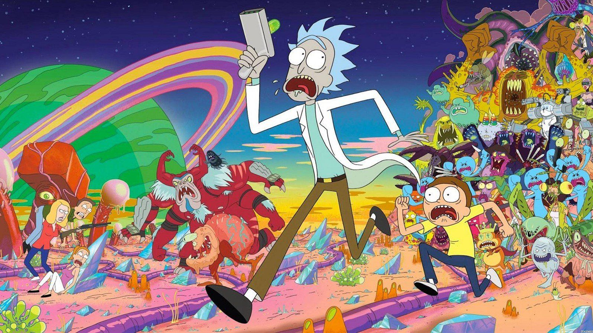

About Rick and Morty
Rick and Morty is an American adult animated science fiction sitcom created by Justin Roiland and Dan Harmon for Cartoon Network's late-night programming block Adult Swim. The series follows the misadventures of cynical mad scientist Rick Sanchez and his good-hearted but fretful grandson Morty Smith, who split their time between domestic life and interdimensional adventures.
Rick and Morty's "typical" adventures!
Rick and Morty's Characteristics
- They are having the most extraordinary adventures!
- They explore new dimensions all the time
- They die multiple times but... not really
Rick and Morty's Family
Rick and Morty have a great -a little bit wierd- family. Rick is the father of Beth Smith; Morty's mother. Jerry Smith is Beth's husband, and Rick's son-in-law. Jerry finally, is the father of Morty and Morty's sister, Summer. Click the links bellow to find out more about their familly members!